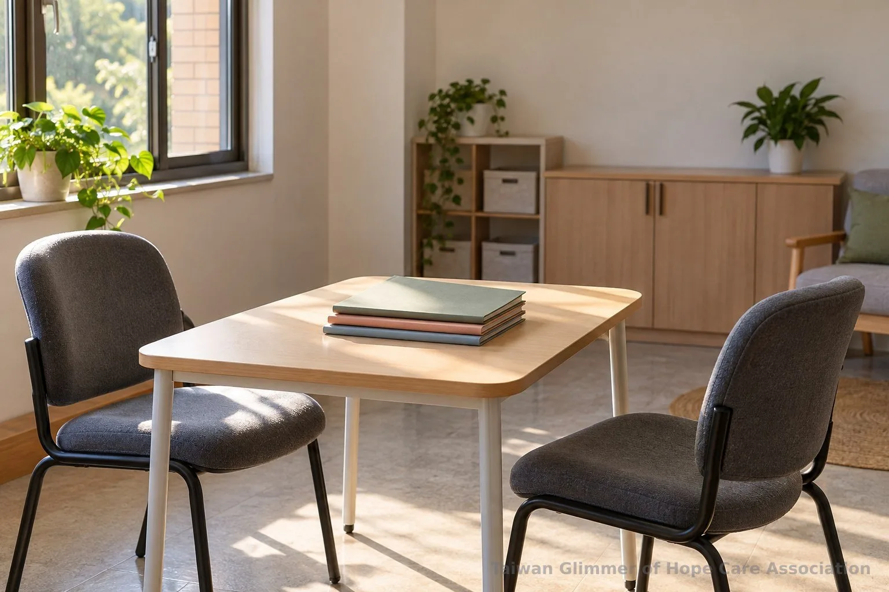
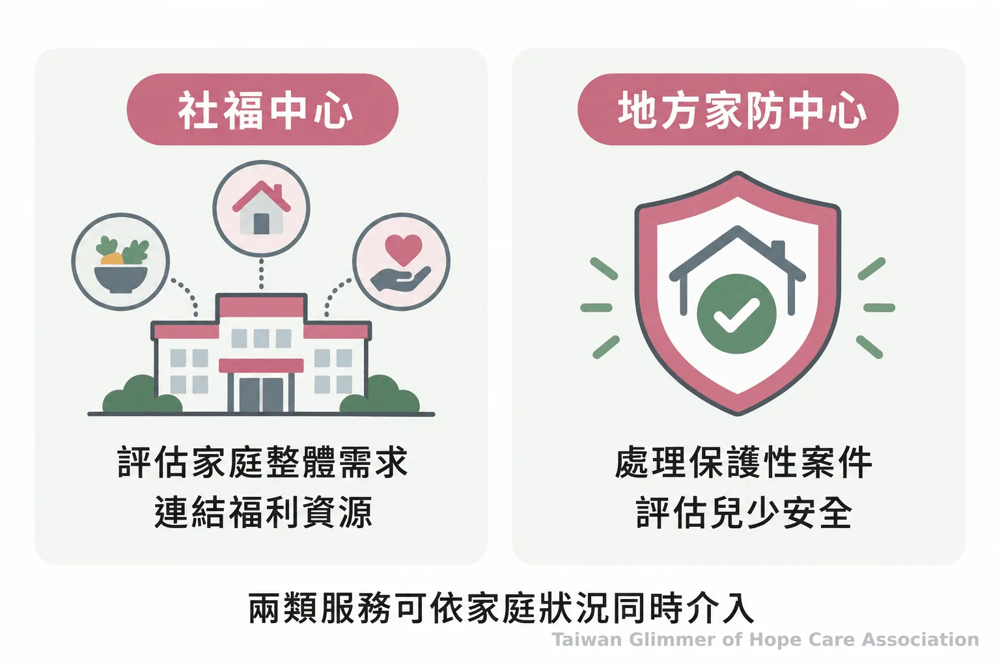
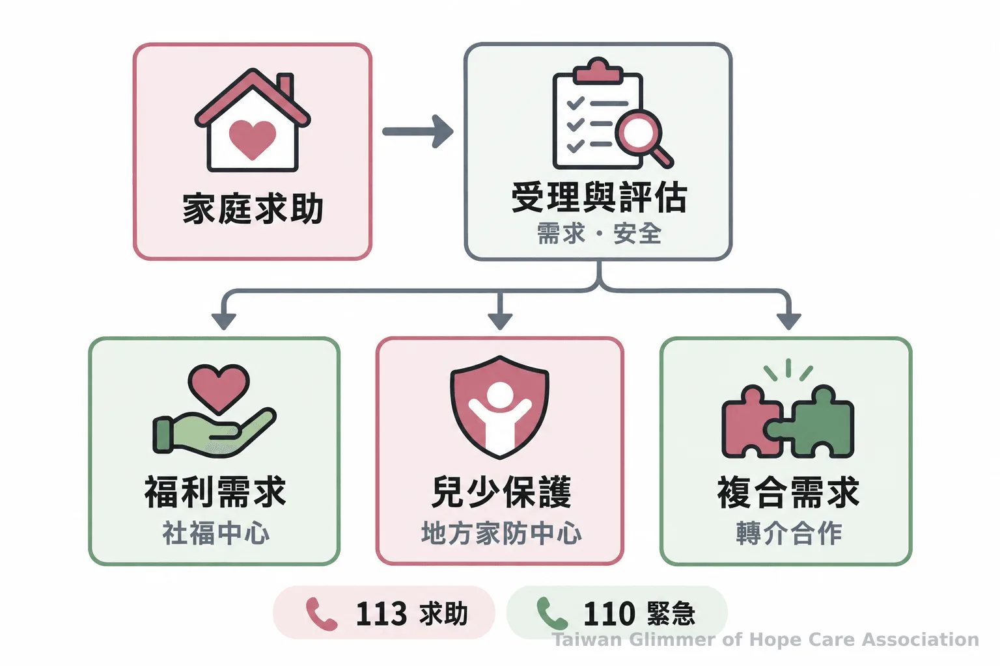

家庭求助有哪些窗口？脆弱家庭支持與兒少保護服務分工
脆弱家庭支持服務與兒少保護各有評估重點。認識社福中心、地方家防中心及社會安全網的分流和轉介方式，並了解113、110求助管道。
脆弱家庭與社會安全網｜系列四之 1
家庭遇到經濟、照顧或親子困難時，為什麼有時由社會福利服務中心協助，有時會進入兒少保護流程？兩種服務都可能接觸兒童、少年與家庭，任務卻不同：脆弱家庭服務了解家庭需要哪些支持，兒少保護評估兒少安全及疑似不當對待。認識差別，能幫家長、教師、志工和社區居民找到求助窗口，也避免把生活困境直接當成受虐證明。

一、脆弱家庭指什麼？
依衛福部說明，脆弱家庭是因風險或多重問題而有物質、生理、心理或環境脆弱性，需要多重支持與服務介入的家庭。
衛福部列出的脆弱因子包括貧窮、失業、物質濫用、未成年親職、家庭照顧功能不足等。這些是辨識家庭需求的參考，不能只憑一項就認定必然開案。社工仍須了解家庭狀況、已有支持與實際需求，再研判是否提供服務、連結資源或轉介。衛福部脆弱家庭說明
「需多重支持與服務介入的家庭。」 來源：衛生福利部社會及家庭署〈什麼是脆弱家庭？要如何辨識脆弱家庭？〉
二、兒少保護評估哪些事情？
兒少保護著重兒童、少年是否疑似遭受虐待、疏忽或其他不當對待，以及需要哪些安全與保護措施。
家庭經濟吃緊、照顧者壓力大，可能表示需要福利或照顧支持；是否涉及兒少保護，仍要評估兒少安全。兩類需要也可能同時出現，家庭可一面取得福利資源，一面由主管機關處理保護需求。
涉及兒少的資訊也要謹慎處理。《兒童及少年福利與權益保障法》第69條規定，特定案件的兒童、少年不得被報導或記載姓名及其他足以識別身分的資訊。談論求助經驗時，應避免刊出姓名、學校、住處、家庭細節等可拼湊出身分的線索。全國法規資料庫：兒少權法第69條
三、社福中心與家防中心分別做什麼？
社福中心評估家庭整體需求並連結福利資源；地方家庭暴力暨性侵害防治中心（家防中心）承接保護性案件，評估兒少安全及保護服務。
社福中心是社區福利服務窗口，可提供福利諮詢，並對需求多重、複雜的家庭進行評估、個案管理與跨網絡資源連結。若家庭需要的是特定服務，中心也會協助辨識需求並媒合適當資源，實際服務依地方政府安排辦理。社會及家庭署：社福中心角色與功能
家防中心處理兒少保護等保護性案件，評估安全風險並依情況安排調查、保護或其他服務。各地受理、派案和後續服務依地方流程及個別評估辦理。衛福部：脆弱家庭及網絡單位分工

四、社會安全網如何分流與轉介？
案件會依通報內容、風險和家庭需求進行受理與評估，再由合適單位承接；訪視後如發現另一類需求，也可依程序轉介或合作。
衛福部說明，保護性案件訪視後若評估不需由家防中心開案，但家庭仍有福利需求，可由社工連結資源；若有多重福利需求，可轉介社福中心。脆弱家庭訪視若發現保護議題，則建議與家防中心討論後轉介。服務依評估調整，家庭不必自行判斷該去哪個窗口。衛福部：兒少保護與脆弱家庭案件互轉機制

五、微光如何在社區陪伴家庭？
台灣微光希望關懷協會透過在地合作據點開設藝術陪伴課，參與社區對脆弱家庭孩子的支持。
協會採取「在地小衛星」模式，走進已有家庭服務工作的合作單位。瑞芳愛鄰據點與愛鄰希望關懷協會合作，是第一個兒童繪畫班的起點；板橋明穗據點與明穗教會合作；中壢宣愛據點與桃園市宣愛社區關懷協會合作，是協會在桃園的第一個據點。課堂以藝術活動陪伴孩子表達與分享，不能取代社福中心評估或主管機關的保護工作。據點資訊見微光協會據點介紹。
六、需要協助時可以找誰？
家庭福利諮詢可洽所在地社會福利服務中心；疑有兒少遭受不當對待，可撥113保護專線諮詢或通報。
衛福部表示，113是全年無休的保護專線，可受理兒童、少年保護事件通報與求助諮詢。若有人身立即危險，請先撥110報警。遇到狀況但不確定屬於哪一種服務時，可以向113說明已知情形，由接線人員協助討論求助方向；一般民眾不必自行調查或作保護決定。衛福部113保護專線；內政部警政署110報案
- 脆弱因子是完整需求評估的參考，不代表必然開案或兒少遭受不當對待。
- 社福中心評估家庭福利需求，家防中心處理保護性案件；兩類服務可以依需要轉介合作。
- 家庭福利需求可洽所在地社福中心；疑有保護需求撥113，立即人身危險撥110。
常見問題
兩者的服務重點不同，但家庭可能同時需要福利支持與兒少安全保護。
常見問題
Q1：脆弱家庭一定會開案嗎？
不一定。是否開案或提供哪種服務，須由社工依家庭整體狀況、支持資源與實際需求評估。
Q2：脆弱家庭和兒少保護案件可以同時存在嗎？
可以。家庭可能同時需要福利資源和兒少安全保護，服務單位可依評估結果轉介或合作。
Q3：社福中心和家防中心由誰承辦？
社福中心處理家庭整體福利需求；地方家防中心承接兒少保護等保護性案件，實際分派依地方流程辦理。
Q4：不確定是否屬於兒少保護需求，可以詢問誰？
可撥113保護專線諮詢；若主要是家庭福利需求，也可洽所在地社會福利服務中心。
Q5：遇到緊急危險時該打哪支電話？
有人身立即危險時，先撥110報警；有疑似保護需求但非立即危險，可撥113諮詢或通報。
參考文獻
衛生福利部及所屬單位、內政部警政署與全國法規資料庫提供制度、法規及求助資訊。
- 衛生福利部社會及家庭署（2025）。〈什麼是脆弱家庭？要如何辨識脆弱家庭？〉https://mohw.gov.tw/ss/cp-4531-50117-204.html
- 衛生福利部社會及家庭署（2025）。〈社會福利服務中心的角色定位和主要功能為何？〉https://topics.mohw.gov.tw/SS/cp-4531-50115-204.html
- 衛生福利部社會及家庭署（2025）。〈脆弱家庭服務和各網絡單位的分工？〉https://topics.mohw.gov.tw/SS/cp-4531-50119-204.html
- 衛生福利部保護服務司（2025）。〈兒少保護及脆弱家庭通報案件訪視後互轉機制為何？〉https://topics.mohw.gov.tw/SS/cp-4531-50130-204.html
- 衛生福利部保護服務司（2026）。〈113保護專線介紹〉https://dep.mohw.gov.tw/DOPs/cp-1183-6499-105.html
- 內政部警政署（2025）。〈110報案〉https://www.npa.gov.tw/ch/app/artwebsite/view?id=1048&module=artwebsite&serno=e3ad2889-4dee-41cf-aef8-9b9d26dc6950
- 全國法規資料庫（2026查詢）。〈兒童及少年福利與權益保障法第69條〉https://law.moj.gov.tw/LawClass/LawSingle.aspx?flno=69&pcode=D0050001
本文同步刊於 appi.news。